네트워크관리사-1급 (2022-04-10 기출문제)
1과목: TCP/IP
1. IPv6 address 표기 방법에 대한 설명 중 알맞은 것은?
- FEC0::/10는 IPv6 브로드캐스트 주소로 사용된다.
- FE80::/10는 링크 로컬 유니캐스트 주소로 사용된다.
- 2001::1/127는 IPv6 주소에서 Loopback 주소로 사용된다.
- FF00::/8는 IPv6 주소에서 애니캐스트 주소로 사용된다.
(정답률: 알수없음)

2. TCP/IP 환경에서 개체 관리를 위해 사용되는 SNMP 기술은 단순하고 직관적으로 동작한다. SNMP에서 사용되는 메시지가 아닌 것은?
- GetRequest
- GetNextRequest
- SetTrap
- SetRequest
(정답률: 알수없음)
3. TCP/IP 참조 모델에서 원격 호스트 간의 Data 전송 시 경로 결정 서비스를 제공하는 계층은?
- Application layer
- Internet layer
- Transport layer
- Data-link layer
(정답률: 알수없음)
4. TCP/IP 환경에서 사용하는 도구인 ′Netstat′ 명령에서 TCP 및 UDP 프로토콜에 대한 통계를 확인할 때, 올바른 명령을 고르시오.
- Netstat –e
- Netstat –s
- Netstat –o
- Netstat -r
(정답률: 알수없음)
5. 다음 내용에 해당하는 기술에서 사용되는 올바른 프로토콜을 고르시오.
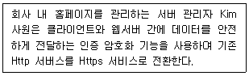
- SSTP
- MIME
- SSH
- SSL
(정답률: 알수없음)
6. ( A )에 해당되는 용어는 무엇인가?
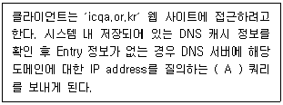
- 재귀
- 반복
- 선택
- 동적
(정답률: 알수없음)
7. DNS 레코드 중 도메인의 메일 서버를 식별하기 위해 사용되는 레코드는?
- NS 레코드
- Host 레코드
- Point 레코드
- MX 레코드
(정답률: 알수없음)
8. TCP에 대한 설명 중 옳지 않은 것은?
- 비연결형 서비스이고, UDP 보다 전송 속도가 빠르다.
- 목적지 프로세서가 모든 데이터를 성공적으로 수신했거나 오류가 발생했다는 메시지를 송신할 수 있다.
- 전송되는 데이터를 연속된 옥텟 스트림 중심의 데이터 전달 서비스를 제공한다.
- 옥텟 스트림은 세그먼트(Segment) 단위로 나눈다.
(정답률: 알수없음)
9. 네트워크 관리자 Kim 사원은 네트워크 환경의 안정성을 점검하기 위하여 네트워크 분석기를 통하여 ARP request packet를 캡쳐 · 분석하였다. 다음 그림의 내용을 참조하여 ARP 필드의 내용의 Target MAC address ( A )는 무엇을 의미하는 주소인가?
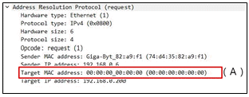
- 목적지 호스트에 대한 로컬 브로드캐스트 주소를 의미한다.
- 목적지 호스트 주소를 알지 못한다는 의미이다.
- ARP reply을 위한 더미(dummy) 값을 의미한다.
- Subnet 상에 있는 특정 호스트를 의미한다.
(정답률: 알수없음)
10. 아래 설명하는 내용 중 ( A ) 안에 적합한 것은?
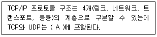
- 링크 계층
- 네트워크 계층
- 트랜스포트 계층
- 응용 계층
(정답률: 알수없음)
11. IPv6 중 그룹 내에 가장 가까운 인터페이스를 가진 호스트 사이의 통신이 가능한 형태는?
- Unicast Type
- Anycast Type
- Multicast Type
- Broadcast Type
(정답률: 알수없음)
12. TCP 환경에서는 여러 가지 프로토콜을 지원한다. 각 프로토콜에 대해 기본적으로 지정되어 사용되고 있는 포트번호로 옳지 않은 것은?
- NNTP : 90
- TFTP : 69
- SMTP : 25
- FTP : 21
(정답률: 알수없음)
13. 다음 내용과 같은 특징을 가진 프로토콜은?
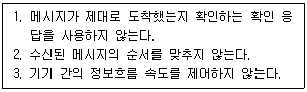
- TCP
- ICMP
- ARP
- UDP
(정답률: 알수없음)
14. ARP 캐시를 유지하기 위한 규칙 중 잘못된 것은?
- 새로 들어온 주소는 생존시간(TTL) 값을 가지고 있어야 한다.
- 새로 들어온 주소가 2분 동안 사용되지 않게 되면 ARP 캐시에서 자동으로 저장한다.
- 어떤 TCP/IP상에서는 주소가 ARP 캐시에 있을 때 재사용되면 TTL값이 매번 초기 값으로 다시 설정된다.
- ARP 캐시가 가득 차 있는 상태에서 새로운 주소가 추가되어야만 오래된 주소를 지우고 새로 들어올 주소를 위해 공간을 마련한다.
(정답률: 알수없음)
15. IP Address ′172.16.0.0′인 경우에 이를 14개의 서브넷으로 나누어 사용하고자 할 경우 서브넷 마스크 값은?
- 255.255.228.0
- 255.255.240.0
- 255.255.248.0
- 255.255.255.192
(정답률: 알수없음)
16. 네트워크 상에서 기본 서브넷 마스크가 구현될 때, IP Address가 ′203.240.155.32′인 경우 아래 설명 중 올바른 것은?
- Network ID는 ′203.240.155′ 이다.
- Network ID는 ′203.240′ 이다.
- Host ID는 ′155.32′가 된다.
- Host ID가 ′255′일 때는 루프백(Loopback)용으로 사용된다.
(정답률: 알수없음)
2과목: 네트워크 일반
17. TFTP에 대한 설명 중 옳지 않은 것은?
- 시작지 호스트는 잘 받았다는 통지 메시지가 올 때까지 버퍼에 저장한다.
- 중요도는 떨어지지만 신속한 전송이 요구되는 파일 전송에 효과적이다.
- 모든 데이터는 512바이트로 된 고정된 길이의 패킷으로 되어 있다.
- 보호등급을 추가하여 데이터 스트림의 위아래로 TCP 체크섬이 있게 한다.
(정답률: 알수없음)
18. ( A )안에 들어가는 용어 중 옳은 것은?
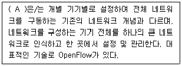
- SDN(Software Defined Network)
- VLAN(Virtual LAN)
- NMS(Network Management System)
- Cloud Computing System
(정답률: 알수없음)
19. 홈네트워크는 일반 가정에서 PC, 주변기기, 디지털 가전기기 등을 표준 프로토콜을 이용하여 제어함으로써 기기간에 정보 공유 및 전달을 가능하게 하는 네트워크이다. 홈네트워크는 유선 홈네트워크와 무선 홈네트워크로 구분할 수 있는데 다음 항목 중 유선 홈네트워크 접속기술로 옳은 것은?
- HomeRF
- Zigbee
- Home PNA
- NFC
(정답률: 알수없음)
20. 이동국과 기지국 간의 무선망 접속 방식을 코드 분할을 통해 사용자가 다중접속하는 방식이다. 코드에 의해 구분된 여러 개의 단말기가 동일한 주파수 대역을 사용할 수 있어 주파수를 효율적으로 활용할 수 있는 무선 전송 방식은?
- CDMA
- TDMA
- CSMA/CD
- FDMA
(정답률: 알수없음)
21. 광섬유 케이블의 재료손실에 해당되지 않은 것은?
- Microbending
- Rayleigh
- Raman
- Brillouin
(정답률: 알수없음)
22. 물리계층의 역할이 아닌 것은?
- 전송매체를 통해서 시스템들을 물리적으로 연결한다.
- 자신에게 온 비트들이 순서대로 전송될 수 있도록 한다.
- 전송, 형식 및 운영에서의 에러를 검색한다.
- 물리적 연결과 동작으로 물리적 링크를 제어한다.
(정답률: 알수없음)
23. 데이터 전송과정에서 먼저 전송된 패킷이 나중에 도착되어 수신측 노드에서 패킷의 순서를 바르게 제어하는 방식은?
- 순서 제어
- 속도 제어
- 오류 제어
- 연결 제어
(정답률: 알수없음)
24. 주파수 분할 다중화 기법을 이용해 하나의 전송매체에 여러 개의 데이터 채널을 제공하는 전송방식은?
- 브로드밴드
- 내로우밴드
- 베이스밴드
- 하이퍼밴드
(정답률: 알수없음)
25. 에러 검출(Error Detection)과 에러 정정(Error Correction)기능을 모두 포함하는 기법으로 옳지 않은 것은?
- 검사합(Checksum)
- 단일 비트 에러 정정(Single Bit Error Correction)
- 해밍코드(Hamming Code)
- 상승코드(Convolutional Code)
(정답률: 알수없음)
26. ARQ 중 에러가 발생한 블록 이후의 모든 블록을 재전송하는 방식은?
- Go-Back-N ARQ
- Stop-and-Wait ARQ
- Selective ARQ
- Adaptive ARQ
(정답률: 알수없음)
27. PCM 변조 과정에 해당 되지 않는 것은?
- 세분화
- 표본화
- 양자화
- 부호화
(정답률: 알수없음)
3과목: NOS
28. 다음은 ′/etc/passwd′ 파일의 권한을 root 사용자만 ′rw′ 권한을 주었다. 그리고 ′/etc/passwd′ 파일을 icqa 사용자도 읽을 수 있도록 설정하였다. ( A )에 해당하는 명령으로 알맞은 것은?
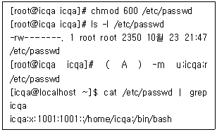
- chattr
- setenforce
- setfacl
- chmod
(정답률: 알수없음)
29. 다음 중 Windows Server 2016 [로컬 보안 정책]의 [계정 정책] 중 ′계정 잠금 정책′ 항목에서 설정할 수 없는 것은?
- 계정 잠금 기간
- 계정 잠금 임계값
- 계정 암호 길이
- 계정 잠금 수 초기화 시간
(정답률: 알수없음)
30. 다음 Windows Active Directory에 대한 구성요소와 설명 중 바르게 짝지어진 것은?
- Domain – 도메인의 집합
- Tree – 도메인을 관리하기 위한 하나의 큰 단위
- Site – 지리적으로 떨어져 있으며, IP주소대가 다른 묶음
- Trust - 두 개 이상의 트리로 구성된 Active Directory
(정답률: 알수없음)
31. Windows 2016 Server에서 DNS Zone영역을 생성할 때, 보조 DNS와 같은 역할을 수행하지만, 수정과 삭제가 되지 않고 읽기 전용으로만 데이터 영역을 가지고 있는 영역을 무엇이라 하는가?
- Primary Zone
- Secondary Zone
- Stub Zone
- ReadOnly Zone
(정답률: 알수없음)
32. 서버 관리자 Park 대리는 Windows Server 2016의 적절한 감사 정책을 통하여 법적 요구 사항과 조직의 정책에 따라 필요한 로그를 남기도록 설정하고자 한다. 감사 정책 항목에 대하여 권장하는 보안 설정이 옳지 않은 것은?
- 계정 관리 감사 : 실패
- 권한 사용 감사 : 실패
- 정책 변경 감사 : 실패
- 계정 로그온 이벤트 감사 : 성공, 실패
(정답률: 알수없음)
33. 서버 담당자 Park 사원은 Windows Server 2016에서 두개의 노드 사이에 저장소를 공유하는 저장소 복제 기능을 사용하고자 한다. 다음 중 Windows Server 2016에서 저장소 복제 기능을 구축하여 활용하고자 하는 방안이 다른 것은?
- 클러스터를 여러 물리 사이트로 확장하는 경우
- 두 개의 각 클러스터 사이에 데이터를 최신 상태로 유지하는 경우
- 두 개의 다른 위치에 저장된 동일한 파일의 중복을 제거하고자 하는 경우
- 서버간 저장소 복제 모드를 사용하는 경우
(정답률: 알수없음)
34. 네트워크 담당자 Kim 사원은 Windows Server 2016에서 원격 액세스 서비스를 운용하고자 한다. Windows Server 2016 내에 있는 이 기능은 DirectAccess와 VPN과 달리 원격 컴퓨터를 네트워크에 연결하는데 사용되지 않는다. 이 기능은 오히려 내부 웹 리소스를 인터넷에 게시하는데 사용된다. 이 기능은 무엇인가?
- WAP(Web Application Proxy)
- PPTP(Point-to-Point Tunneling Protocol)
- L2TP(Layer 2 Tunneling Protocol)
- SSTP(Secure Socket Tunneling Protocol)
(정답률: 알수없음)
35. Windows Server 2016이 설치된 컴퓨터는 항상 가동하는 것이 일반적인 용도이기 때문에 서버 담당자 Park 사원은 시스템을 종료할 때마다 그 이유를 명확히 하여 더 안정적으로 시스템을 운영하고자 한다. 다음 중 이전에 종료 또는 재부팅된 기록을 확인할 수 있는 항목은?
- 성능모니터
- 이벤트뷰어
- 로컬보안정책
- 그룹정책편집기
(정답률: 알수없음)
36. 서버 담당자 Park 사원은 Windows Server 2016의 장애를 대비하여 인증서 키를 백업해 놓았다. 이 인증서 키를 실행창에서 명령어를 통해 복원시키고자 하는데 인증서 관리자를 호출할 수 있는 명령어는 무엇인가?
- eventvwr.msc
- compmgmt.msc
- secpol.msc
- certmgr.msc
(정답률: 알수없음)
37. Linux 시스템에서 사용자 계정의 정보를 수정하는 명령어는?
- usermod
- config
- profile
- passwd
(정답률: 알수없음)
38. Linux의 ′vi′ 에디터 명령 모드 작업에 대한 설명 중 올바른 것은?
- 저장하는 방법은 ′:q′ 이다.
- 저장하지 않고 끝내는 방법은 ′:wq!′ 이다.
- 문서에 행 번호 붙이기는 ′:set nu′ 이다.
- 한 줄 삭제 명령은 ′dw′ 이다.
(정답률: 알수없음)
39. Linux에서 파일의 접근 권한 변경 시 사용되는 명령어는?
- umount
- greb
- ifconfig
- chmod
(정답률: 알수없음)
40. Linux에서 사용되는 어플리케이션 및 환경 설정에 필요한 설정 파일들과 ′passwd′ 파일을 포함하고 있는 디렉터리는?
- /bin
- /home
- /etc
- /root
(정답률: 알수없음)
41. DHCP 클라이언트에서는 지정된 간격으로 대여기간을 갱신 받게 되는데 이를 수동으로 하는 명령어는?
- ipconfig /renew
- ipconfig /refresh
- netstat /renew
- netstat /refresh
(정답률: 알수없음)
42. 아파치 서버의 설정 파일인 ′httpd.conf′의 항목에 대한 설명으로 옳지 않은 것은?
- KeepAlive On : HTTP에 대한 접속을 끊지 않고 유지한다.
- StartServers 5 : 웹서버가 시작할 때 다섯 번째 서버를 실행 시킨다.
- MaxClients 150 : 한 번에 접근 가능한 클라이언트의 개수는 150개 이다.
- Port 80 : 웹서버의 접속 포트 번호는 80번이다.
(정답률: 알수없음)
43. Windows Server 2016의 파일 서버에서 사용자 기본접근권한을 설정할 때 사용할 수 없는 항목은 무엇인가?
- Read
- Write
- List folder contents
- Wirte & Excute
(정답률: 알수없음)
44. 아래의 내용에서 설명하는 프로토콜은?
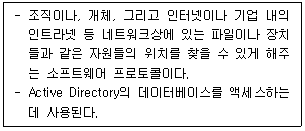
- DHCP
- SNMP
- LDAP
- Kerberos 버전5
(정답률: 알수없음)
45. E-Mail에서 주로 사용하는 프로토콜로 옳지 않은 것은?
- SMTP
- POP3
- IMAP
- SNMP
(정답률: 알수없음)
4과목: 네트워크 운용기기
46. RAID에 대한 설명이 옳지 않은 것은?
- RAID level 2 : 어레이 안의 모든 드라이브에 비트 수준으로 자료 나누기를 제공한다. 추가 드라이브는 해밍 코드를 저장한다. 미러링된 드라이브는 필요없다.
- RAID level 3 : 기본적으로 RAID 1+2이다. 이는 다수의 RAID 1 한 쌍에 걸쳐 적용된 것이다. 패리티 정보는 생성되고 단일 패리티 디스크에 작성된다.
- RAID level 4 : 데이터가 비트나 바이트보다는 디스크 섹터 단위로 나누어지는 것만 제외하면 RAID level 3과 비슷하다. 패리티 정보도 생성된다.
- RAID level 5 : 데이터는 드라이브 어레이의 모든 드라이브에 디스크 섹터 단위로 작성된다. 에러-수정 코드도 모든 드라이브에 작성된다.
(정답률: 알수없음)
47. OSPF에 관한 설명으로 옳지 않은 것은?
- IP의 서비스를 받는다.
- 프로토콜 Number는 89번을 사용한다.
- 물리적인 네트워크 토폴로지에 따라 네트워크 타입을 규정하고 있다.
- Distance Vector 라우팅 프로토콜이다.
(정답률: 알수없음)
48. 라우터가 라우팅 프로토콜을 이용해서 검색한 경로 정보를 저장하는 곳은?
- MAC Address 테이블
- NVRAM
- 플래쉬(Flash) 메모리
- 라우팅 테이블
(정답률: 알수없음)
49. RIP(Routing Information Protocol)의 동작 설명으로 옳지 않은 것은?(단, 모든 설정 값은 기본 설정 값을 사용한다.)
- 라우팅 테이블은 데이타그램 패킷을 통하여 모든 라우터에 방송된다.
- RIP에서는 최대 Hop를 16으로 제한하므로 16이상의 경우는 도달할 수 없는 네트워크를 의미한다.
- 매 60초 마다 라우팅 정보를 방송한다.
- 만약 180초 이내에 새로운 라우팅 정보가 수신되지 않으면 해당 경로를 이상 상태로 간주한다.
(정답률: 알수없음)
50. 네트워크 보안 장비 중 네트워크 침입 시도의 흔적을 찾거나 네트워크 장비의 사용을 감시하는 용도로 사용되는 보안 장비는?
- 침입탐지/방지시스템(IDS/IPS)
- 방화벽(Firewall)
- 네트워크관리시스템(NMS)
- 가상사설망시스템(VPN)
(정답률: 알수없음)
5과목: 정보보호개론
51. 다음 보기 중 iptables 에서 규칙에 맞는 패킷을 거부해 패킷의 출발지에 에러 메시지를 돌려주는 설정 값은?
- DROP
- REJECT
- MASQUERADE
- LOG
(정답률: 알수없음)
52. nmap 포스트캔을 이용하여 UDP 포트 스캔 시 서비스 포트가 Close 되어 있을 경우 회신되는 것은?
- RST
- RST + ACK
- ICMP unreachable
- 응답없음
(정답률: 알수없음)
53. 윈도우 시스템에서 폴더에 대한 공유를 해제하고자 한다. ( A )에 해당하는 해제 명령어로써 옳은 것은?(아래는 윈도우 시스템의 공유 자원에 대한 출력이다.)
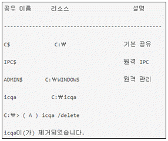
- net stop
- net share
- net session
- net user
(정답률: 알수없음)
54. Secure Sockets Layer 버전 3.0에 존재하는 취약점을 이용하면 공격자는 패딩 오라클 공격에 의해 암호화 통신의 일부(주로 쿠키 정보)를 해독할 수 있다. 이 취약점의 이름은?
- POODLE 취약점
- heart bleed 취약점
- Bicycle 취약점
- freak 취약점
(정답률: 알수없음)
55. 다음은 Windows의 네트워크 기반 유틸리티에 대한 설명이다. 틀린 것은?
- ipconfig : 해당 컴퓨터의 IP 설정과 관련된 기능 수행
- arp : 라우팅 테이블에 대한 정보 출력
- tracert : 목적지 IP 주소까지의 경로에서 중계 역할을 하는 라우터의 주소 표시
- nslookup : DNS 서버에 연결해서 IP주소나 도메인 이름에 대한 질의
(정답률: 알수없음)
56. Linux에서 tar 옵션 중 설명이 틀린 것은?
- c - 새로운 아카이브 생성
- x - 아카이브 해제
- f - tar 아카이브 파일 지정
- j - tar.gz 형태로 압축 또는 해제
(정답률: 알수없음)
57. 라우터(Router)를 이용한 네트워크 보안 설정 방법 중에서 내부 네트워크로 유입되는 패킷의 소스 IP나 목적지 포트 등을 체크하여 적용하거나 거부하도록 필터링 과정을 수행하는 것은? (Standard 또는 Extended Access-List 사용)
- Ingress Filtering
- Egress Filtering
- Unicast RFP
- Packet Sniffing
(정답률: 알수없음)
58. Linux의 서비스 포트 설정과 관련된 것은?
- /etc/services
- /etc/pam.d
- /etc/rc5.d
- /etc/service.conf
(정답률: 알수없음)
59. 다음은 TCP/IP 공격 유형에 대한 설명이다. 올바른 것은?
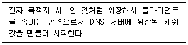
- DNS Cache Poisoning
- Denial of Service
- Data Insertion
- Man in the middle
(정답률: 알수없음)
60. 정보보호 서비스 개념에 대한 아래의 설명에 해당하는 것은?
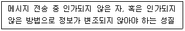
- 무결성
- 부인봉쇄
- 접근제어
- 인증
(정답률: 알수없음)